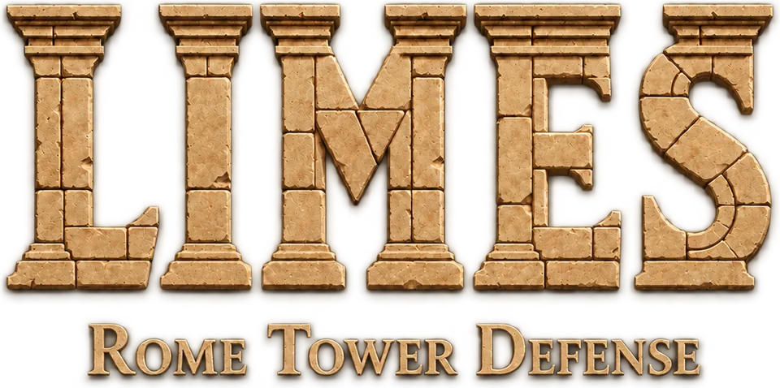

Die GrenzeThe Frontier
Wachtürme im Morgennebel und ein Kastell aus Holz. Die ersten Stämme prüfen, wie fest Rom wirklich steht.Watchtowers in the morning mist and a timber fort. The first tribes test how firmly Rome really stands.

Germanien, am Rand des Reiches. Baue Türme, halte das Kastell und führe deine Legion vom Rhein bis tief in den Teutoburger Wald. Ein Tower-Defense-Spiel, in dem Gelände, Wetter und Wasser mitspielen. Germania, at the edge of the empire. Raise towers, hold the fort and lead your legion from the Rhine deep into the Teutoburg Forest. A tower defense game where terrain, weather and water matter.
Kostenlos · Beta für alle offen · Deutsch & EnglischFree · Beta open to everyone · English & German
Wachtürme im Morgennebel und ein Kastell aus Holz. Die ersten Stämme prüfen, wie fest Rom wirklich steht.Watchtowers in the morning mist and a timber fort. The first tribes test how firmly Rome really stands.
Furten, brennende Brücken, ein Nachschubkonvoi. Und ein Fluss, der steigt, bis er die eigenen Türme mitreisst.Fords, burning bridges, a supply convoy. And a river that rises until it sweeps your own towers away.
Nebel, Hinterhalte, kaum Vorräte. Im Wald zählt jede Stellung, und am Ende wartet das Lager des Häuptlings.Fog, ambushes, dwindling supplies. In the forest every position counts, and at the end lies the chieftain's camp.
Die Germanen schlagen Brücken über den Rhein. Schiess sie zusammen, bevor sie stehen. Furten öffnen Wege, Tiefwasser sperrt, und das Hochwasser steigt in Phasen, bis es Bäume entwurzelt und Holztürme mitreisst.The Germanic tribes bridge the Rhine. Bring the bridges down before they stand. Fords open paths, deep water blocks them, and the flood rises in phases until it uproots trees and sweeps timber towers away.
Keine festen Felder: Du wählst den Platz auf erkundetem Gelände, unebener Boden wird geebnet. Jeder Turm wächst in drei Ausbaustufen, wählt eine Spezialisierung und wird mit der Zeit zum Veteranen.No fixed slots: you pick the spot on scouted ground, uneven terrain gets levelled. Every tower grows through three upgrade tiers, picks a specialisation and becomes a veteran over time.
Deine Türme sehen nur, was in ihrer Reichweite liegt. Dahinter liegt Nebel, und dort sammeln sich die Germanen. Wer blind baut, baut am falschen Ort.Your towers only see what lies within their reach. Beyond it lies the fog, and that is where the tribes gather. Whoever builds blind builds in the wrong place.
Halte das Kastell gegen Brandstifter, führe eine Kolonne durch den nassen Wald, schütze Arbeiter beim Lagerbau. Jede der fünfzehn Missionen stellt eine eigene Frage.Hold the fort against arsonists, lead a column through the rain-soaked forest, guard workers building camp. Each of the fifteen missions asks its own question.
Schwere Steinwerfer und ein Wachturm, der die nächste Welle vorhersagt.Heavy stone throwers and a watchtower that forecasts the next wave.
Morgennebel, Herbstlaub, Regen im Wald: Jede Mission hat ihre eigene Stimmung.Morning mist, autumn leaves, rain in the forest: every mission has its own mood.
Kastelle, Ausrüstung und Briefe an Rom, so nah wie möglich an dem, was wir über den Limes wissen.Forts, equipment and letters to Rome, as close as we can get to what we know about the Limes.
Die Beta umfasst die ganze Germania-Kampagne. Dein Feedback entscheidet, wie schwer die Grenze zu halten ist.The beta contains the full Germania campaign. Your feedback decides how hard the frontier is to hold.
Android: der Beta-Gruppe beitreten, dann im Play Store am Test teilnehmen. iPhone über TestFlight.Android: join the beta group, then join the test on Google Play. iPhone via TestFlight.
Fünfzehn Missionen, drei Akte. Keine Werbung, keine Käufe.Fifteen missions, three acts. No ads, no purchases.
Per Mail oder mit dem freiwilligen Testprotokoll in den Optionen.By email or with the optional play log in the settings.
Während der Beta findest du die App nicht über die Suche, sondern nur über die Links unten. Sie sieht so aus.During the beta the app does not show up in search, only through the links below. This is what it looks like.
Du brauchst ein Google-Konto. Melde dich bei beiden Schritten mit dem Konto an, das auf deinem Gerät eingerichtet ist. Nach «Tester werden» führt ein Link in den Play Store zum Installieren; bis die App dort erscheint, kann es einige Minuten dauern.You need a Google account. Sign in for both steps with the account set up on your device. After "Become a tester" a link takes you to Google Play to install; it can take a few minutes until the app shows up there.
Du brauchst die kostenlose App TestFlight aus dem App Store.You need the free TestFlight app from the App Store.